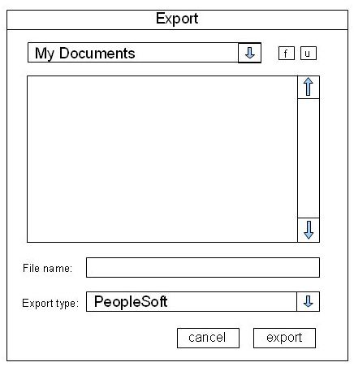
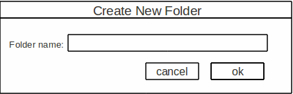
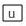
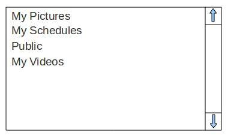
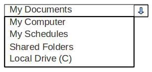
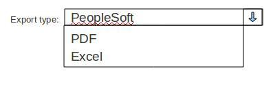

When the user clicks on the export button the window below comes on screen.

This window allows the user to:
Select where the file will be placed
Create a new folder in the current directory
Go up one level in the directory
Select what file type to export into
Name the exported file.
When the button is clicked it will bring up the window below so that a new folder can be created and named in the current directory displayed in the export window:here the user can name the new folder and click ok to create the folder in the directory that the export window shows in its directory display field.

When the button  is clicked it will bring the user up one level in the current directory. Below is a view of the directory:

The user can double click to navigate through the folders to the one that will hold the schedule being exported.
The user also has the ability to select a different directory through the drop down menu shown below that is located at the top of the window that is presented to the user.

The user can select the export type using the drop down menu show below:

The “export” button will then start the exporting process and the file that was just named will be created in the directory specified in the browsing pain.
The “cancel” button will cancel export operation and not create a file.
Prev: [Section 2.1] | Next: Section 2.2 | Up: functional | Top: index